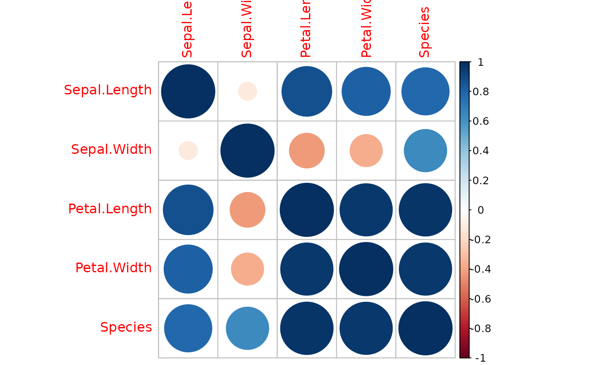

Computes correlation-type analysis on large data frames with mixed column types, including integer, numeric, factor, and character. Character columns are treated as categorical variables.
Usage
corrp(
df,
parallel = TRUE,
n.cores = 1,
p.value = 0.05,
verbose = TRUE,
num.s = 250,
rk = FALSE,
comp = c("greater", "less"),
alternative = c("greater", "less", "two.sided"),
cor.nn = c("pearson", "mic", "dcor", "pps"),
cor.nc = c("lm", "pps"),
cor.cc = c("cramersV", "uncoef", "pps"),
lm.args = list(),
pearson.args = list(),
dcor.args = list(),
mic.args = list(),
pps.args = list(ptest = FALSE),
cramersV.args = list(),
uncoef.args = list()
)Arguments
- df
[
data.frame(1)]
input data frame.- parallel
[
logical(1)]
If it's TRUE run the operations in parallel backend.- n.cores
[
numeric(1)]
The number of cores to use for parallel execution.- p.value
[
logical(1)]
P-value probability of obtaining the observed results of a test, assuming that the null hypothesis is correct. By default p.value=0.05 (Cutoff value for p-value.).- verbose
[
logical(1)]
Activate verbose mode.- num.s
[
numeric(1)]
Used in permutation test. The number of samples with replacement created with y numeric vector.- rk
[
logical(1)]
Used in permutation test. if its TRUE transform x, y numeric vectors with samples ranks.- comp
[
character(1)]
The parameterp.valuemust be greater or less than those estimated in tests and correlations.- alternative
[
character(1)]
a character string specifying the alternative hypothesis for the correlation inference. It must be one of "two.sided" (default), "greater" or "less". You can specify just the initial letter.- cor.nn
[
character(1)]
Choose correlation type to be used in integer/numeric pair inference. The options arepearson: Pearson Correlation,mic: Maximal Information Coefficient,dcor: Distance Correlation,pps: Predictive Power Score.Default isPearson Correlation.- cor.nc
[
character(1)]
Choose correlation type to be used in integer/numeric - factor/categorical pair inference. The option arelm: Linear Model,pps: Predictive Power Score. Default isLinear Model.- cor.cc
[
character(1)]
Choose correlation type to be used in factor/categorical pair inference. The option arecramersV: Cramer's V,uncoef: Uncertainty coefficient,pps: Predictive Power Score. Default isCramer's V.- lm.args
[
list(1)]
additional parameters for linear model to be passed tolm.- pearson.args
[
list(1)]
additional parameters for Pearson correlation to be passed tocor.test.- dcor.args
[
list(1)]
additional parameters for the distance correlation to be passed todcorT_test.- mic.args
[
list(1)]
additional parameters for the maximal information coefficient to be passed tomine.- pps.args
[
list(1)]
additional parameters for the predictive power score to be passed toscore.- cramersV.args
[
list(1)]
additional parameters for the Cramer's V to be passed tocramersV.- uncoef.args
[
list(1)]
additional parameters for the uncertainty coefficient to be passed toUncertCoef.
Value
A list with two tables: data and index.
data: A table containing all the statistical results. The columns of this table are as follows:
infer: The method or metric used to assess the relationship between the variables (e.g., Maximal Information Coefficient or Predictive Power Score).infer.value: The value or score obtained from the specified inference method, representing the strength or quality of the relationship between the variables.stat: The statistical test or measure associated with the inference method (e.g., P-value or F1_weighted).`stat.value: The numerical value corresponding to the statistical test or measure, providing additional context about the inference (e.g., significance or performance score).
isig: A logical value indicating whether the statistical result is significant (TRUE) or not, based on predefined criteria (e.g., threshold for P-value).msg: A message or error related to the inference process.varx: The name of the first variable in the analysis (independent variable or feature).vary: The name of the second variable in the analysis (dependent/target variable).
index: A table that contains the pairs of indices used in each inference of the
datatable.
All statistical tests are controlled by the confidence interval of p.value parameter. If the statistical tests do not obtain a significance greater/less than p.value the value of variable isig will be FALSE.
If any errors occur during operations the association measure (infer.value) will be NA.
The result data and index will have \(N^2\) rows, where N is the number of variables of the input data.
By default there is no statistical significance test for the PPS algorithm. In this case isig is NA, you can enable it by setting ptest = TRUE in pps.args.
All the *.args can modify the parameters (p.value, comp, alternative, num.s, rk, ptest) for the respective method on it's prefix.
Pair Types
Numeric pairs (integer/numeric):
Pearson Correlation Coefficient: A widely used measure of the strength and direction of linear relationships. Implemented using
cor. For more details, see https://doi.org/10.1098/rspl.1895.0041. The value lies between -1 and 1.Distance Correlation: Based on the idea of expanding covariance to distances, it measures both linear and nonlinear associations between variables. Implemented using
dcorT.test. For more details, see https://doi.org/10.1214/009053607000000505. The value lies between 0 and 1.Maximal Information Coefficient (MIC): An information-based nonparametric method that can detect both linear and non-linear relationships between variables. Implemented using
mine. For more details, see https://doi.org/10.1126/science.1205438. The value lies between 0 and 1.Predictive Power Score (PPS): A metric used to assess predictive relations between variables. Implemented using
score. For more details, see https://zenodo.org/record/4091345. The value lies between 0 and 1.
Numeric and categorical pairs (integer/numeric - factor/categorical):
Square Root of R² Coefficient: From linear regression of the numeric variable over the categorical variable. Implemented using
lm. For more details, see https://doi.org/10.4324/9780203774441. The value lies between 0 and 1.Predictive Power Score (PPS): A metric used to assess predictive relations between numeric and categorical variables. Implemented using
score. For more details, see https://zenodo.org/record/4091345. The value lies between 0 and 1.
Categorical pairs (factor/categorical):
Cramér's V: A measure of association between nominal variables. Computed based on a chi-squared test and implemented using
cramersV. For more details, see https://doi.org/10.1515/9781400883868. The value lies between 0 and 1.Uncertainty Coefficient: A measure of nominal association between two variables. Implemented using
UncertCoef. For more details, see https://doi.org/10.1016/j.jbi.2010.02.001. The value lies between 0 and 1.Predictive Power Score (PPS): A metric used to assess predictive relations between categorical variables. Implemented using
score. For more details, see https://zenodo.org/record/4091345. The value lies between 0 and 1.
References
KS Srikanth, sidekicks, cor2, 2020. URL: https://github.com/talegari/sidekicks/. Paul van der Laken, ppsr, 2021. URL: https://github.com/paulvanderlaken/ppsr/.
Examples
# Usage with default settings
iris_c <- corrp(iris)
iris_m <- corr_matrix(iris_c, isig = FALSE) # You can then make correlation matrix
if (require("corrplot")) {
corrplot(iris_m) # You can visualize the matrix using corrplot
}

# Using PPS for both numeric-numeric and numeric-categorical pairs
iris_c1 <- corrp(iris, cor.nn = "pps", cor.nc = "pps")
# Using Distance Correlation for numeric-numeric and Predictive Power Score for numeric-categorical
iris_c2 <- corrp(iris, cor.nn = "dcor", cor.nc = "pps", dcor.args = list(method = "auto"))
# Using Maximal Information Coefficient (MIC) for numeric-numeric and Uncertainty Coefficient for categorical-categorical
iris_c3 <- corrp(iris, cor.nn = "mic", cor.cc = "uncoef", mic.args = list(alpha = 0.6))
# Using PPS for all pair types
iris_c4 <- corrp(iris, cor.nn = "pps", cor.nc = "pps", cor.cc = "pps")
# Using Distance Correlation for numeric-numeric, Predictive Power Score for numeric-categorical,
# and Uncertainty Coefficient for categorical-categorical
iris_c5 <- corrp(
iris,
cor.nn = "dcor", cor.nc = "pps", cor.cc = "uncoef",
dcor.args = list(method = "auto")
)